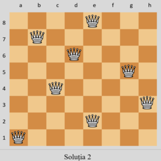

Problema reginelor(sau problema damelor) tratează plasarea a opt regine de șah pe o tablă de șah astfel încât să nu existe două regine care se amenință reciproc. Așadar, se caută o soluție astfel încât nicio pereche de două regine să nu fie pe același rând, pe aceeași coloană, sau pe aceeași diagonală. Problema cu opt regine este doar un caz particular pentru problema generală, care presupune plasarea a n regine pe o tablă de șah n×n în aceleași condiții. Pentru această problemă, există soluții pentru toate numerele naturale n cu excepția lui n=2 și n=3.
Compozitorul de șah, Max Bezzel, a publicat problema celor opt regine în 1848. Franz Nauck a publicat primele soluții în 1850. Acesta a și extins problema la n regine, cu n regine pe o tablă de șah de n × n pătrate.
De atunci, mulți matematicieni, inclusiv Carl Friedrich Gauss, au lucrat atât la problema inițială cu opt regine cât și la varianta generalizată cu n regine. În 1874, S. Gunther a propus o metodă care utilizează determinanții pentru a găsi soluții. J. W. L. Glaisher a rafinat abordarea lui Gunther.
În 1972, Edsger Dijkstra a folosit această problemă pentru a ilustra puterea a ceea ce el numește programare structurată. El a publicat o descriere foarte detaliată a unui algoritm backtracking de parcurgere în adâncime.
Problema poate fi destul de costisitoare computațional, întrucât sunt 4426165368 (adică, 64C8) aranjamente posibile ale celor opt regine pe o tablă 8×8, dar numai 92 de soluții. Se pot utiliza scurtături care reduc cerințele de calcul, sau reguli aproximative, care evită căutarea cu forța brută. De exemplu, aplicând o regulă simplă, care constrânge fiecare regină să stea pe coloana (sau rândul) ei, deși încă se consideră că se folosește forța brută, se poate reduce numărul de posibilități la 16777216 (88) combinații posibile. Generarea de permutări reduce și mai mult posibilitățile la 40320 (adică 8!), care sunt apoi verificate dacă damele nu se atacă pe diagonală.
Soluții:
Problema cu opt regine are 92 de soluții distincte. Daca soluțiile care diferă numai prin operațiunile de simetrie (rotație și reflexie a tablei) sunt considerate a fi una singură, problema are 12 soluții. Acestea sunt numite soluții fundamentale; mai jos sunt prezentate reprezentante ale fiecăreia.
O soluție fundamentală are, de obicei, opt variante (inclusiv forma sa originală) obținute prin rotirea cu 90, 180 sau 270° și apoi reflexia fiecăreia dintre cele patru variante într-o oglindă într-o poziție fixă. Cu toate acestea, dacă o soluție este echivalentă cu propria rotire la 90° (cum se întâmplă cu o soluție cu cinci regine pe o tablă 5×5), ca soluție fundamentală va avea doar două variante (ea însăși și reflexia sa). Dacă o soluție este echivalentă cu propria rotație la 180° (dar nu cu rotația la 90°), va avea patru variante (ea însăși și reflexia sa, rotirea la 90° și reflexia sa). Dacă n > 1, nu este posibil ca o soluție să fie echivalentă cu propria reflexie pentru că aceasta ar impune ca două regine să fie una în fața alteia. Din cele 12 soluții fundamentale la problema cu opt regine pe o tablă 8×8, exact una (soluția 12 de mai jos) este egală cu propria rotație la 180°, și niciuna nu este egală cu rotația la 90°; astfel, numărul de soluții distincte este 11×8 + 1×4 = 92 (unde 8 rezultă din cele patru poziții de rotație la 90° și reflexiile lor, iar 4 rezultă din din două poziții de rotație la 180° și reflexiile lor).
|  | |||
#include <iostream> #include <cmath> using namespace std; int v[10] ,n, sol; void afisare(){ int i,j; sol++; cout<<"Solutia:"<<sol<<endl; for(i=1; i<=n; i++){ for(j=1; j<=n; j++) if(v[i]==j) cout<<"Q"; else cout<<"-"; cout<<endl; } } int valid(int k){ for(int i=1; i<k; i++) if(v[k]==v[i] || (abs(v[k]-v[i])==(k-i))) return 0; return 1; } int solutie(int k){ if(k == n) return 1; return 0; } void back(int k){ for(int i = 1; i <= n; i++){ v[k]=i; if( valid(k)==1) if(solutie(k)==1) afisare(); else back(k+1); } } int main(){ cout<<"n="; cin>>n; back(1); return 0; }
var solveNQueens = function(n) { const rezultat = [] const afisare = Array(n).fill(0).map(_ => Array(n).fill('-')) const coloana = Array(n).fill(false) const diagonala1 = Array(n * 2 - 1).fill(false) const diagonala2 = Array(n * 2 - 1).fill(false) const put = (i, j) => { const indexD1 = i + n - j - 1 const indexD2 = i + j if (coloana[j] || diagonala1[indexD1] || diagonala2[indexD2]) { return } afisare[i][j] = 'Q' coloana[j] = true diagonala1[indexD1] = true diagonala2[indexD2] = true if (i === n - 1) { rezultat.push(afisare.map(row => row.join(''))) } else { for (let k = 0; k < n ; k ++) { put(i + 1, k) } } afisare[i][j] = '-' coloana[j] = false diagonala1[indexD1] = false diagonala2[indexD2] = false } for (let k = 0; k < n ; k ++) { put(0, k) } return rezultat };